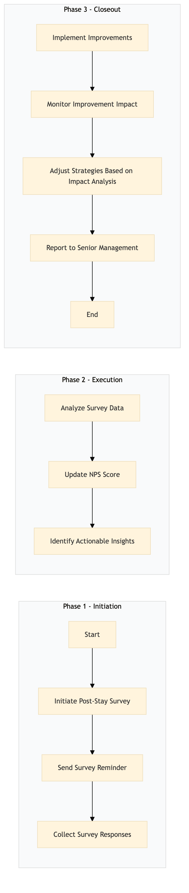

| Role | Steps |
|---|---|
| Front Desk Agent | 1.1 |
| Revenue Manager | 1.2 |
| Guest Services Coordinator | 1.3 |
| Data Analyst | 2.1 3.2 |
| Loyalty Manager | 2.2 3.3 |
| General Manager | 2.3 3.4 |
| Step | Name | Role | System | Input | Output | KPI | Dec? | Exc? | Pain Point / Risk |
|---|---|---|---|---|---|---|---|---|---|
| 1.1 | Initiate Post-Stay Survey | Front Desk Agent | Oracle OPERA Cloud | Guest check-out information | Post-stay survey request sent to guest's device | Survey completion rate > 80% | N | Y | Ensuring timely and accurate data entry for seamless survey initiation |
| 1.2 | Send Survey Reminder | Revenue Manager | Oracle OPERA Cloud | Survey request status | Reminder email sent to guest | Response rate within 24 hours > 70% | N | Y | Handling multiple channels for survey reminders |
| 1.3 | Collect Survey Responses | Guest Services Coordinator | Oracle OPERA Cloud | Guest responses | Survey data stored in Oracle OPERA Cloud | Data entry accuracy > 95% | N | Y | Managing large volumes of survey data efficiently |
| 2.1 | Analyze Survey Data | Data Analyst | Microsoft Power BI | Survey data from Oracle OPERA Cloud | Analytics report | Report generation time < 30 min | N | Y | Integrating multiple data sources for comprehensive analysis |
| 2.2 | Update NPS Score | Loyalty Manager | Marriott Bonvoy CRM | Analytics report | Updated NPS score in Marriott Bonvoy CRM | NPS score update frequency > monthly | N | Y | Maintaining consistency across different platforms for accurate NPS tracking |
| 2.3 | Identify Actionable Insights | General Manager | Microsoft Power BI | Analytics report | Action plan document | Time to identify insights < 1 hour | N | Y | Prioritizing insights for immediate action |
| 3.1 | Implement Improvements | Department Heads | Oracle OPERA Cloud, IDeaS G3 RMS | Action plan document | Service improvement measures implemented | Improvement implementation rate > 90% | N | Y | Coordinating cross-departmental efforts for effective service enhancements |
| 3.2 | Monitor Improvement Impact | Data Analyst | Microsoft Power BI | Service improvement measures | Impact analysis report | Impact monitoring frequency > weekly | N | Y | Measuring the long-term impact of implemented changes |
| 3.3 | Adjust Strategies Based on Impact Analysis | Loyalty Manager | Marriott Bonvoy CRM | Impact analysis report | Strategic adjustments document | Strategy adjustment rate > quarterly | N | Y | Balancing short-term improvements with long-term loyalty goals |
| 3.4 | Report to Senior Management | General Manager | Microsoft Power BI, Salesforce | Strategic adjustments document | Executive summary report | Reporting frequency > monthly | N | Y | Communicating complex data insights to non-technical stakeholders |
The process involves collecting post-stay feedback from guests to improve service quality and manage Net Promoter Score (NPS) at a Marriott full-service hotel.